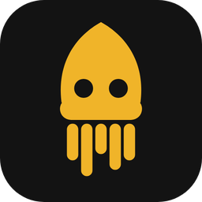

Squidify
Виджет Spotify поверх окон · версия
Ссылка на виджет
Скопируйте ссылку виджета на сайте Squidify («Мои виджеты» → «Копировать») и вставьте сюда. Дизайн настраивается на сайте и обновляется в окне автоматически.
Окно
Виджет масштабируется вместе с окном и не обрезается. Размер можно менять и мышью: потяните за правый нижний уголок.
Горячая клавиша
Скрывает и показывает виджет. Нажмите сочетание в поле ниже.